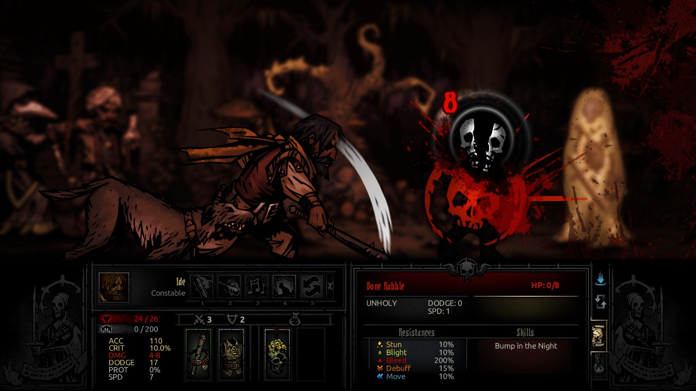
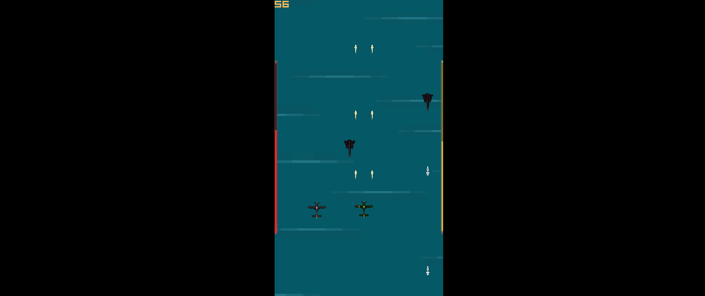
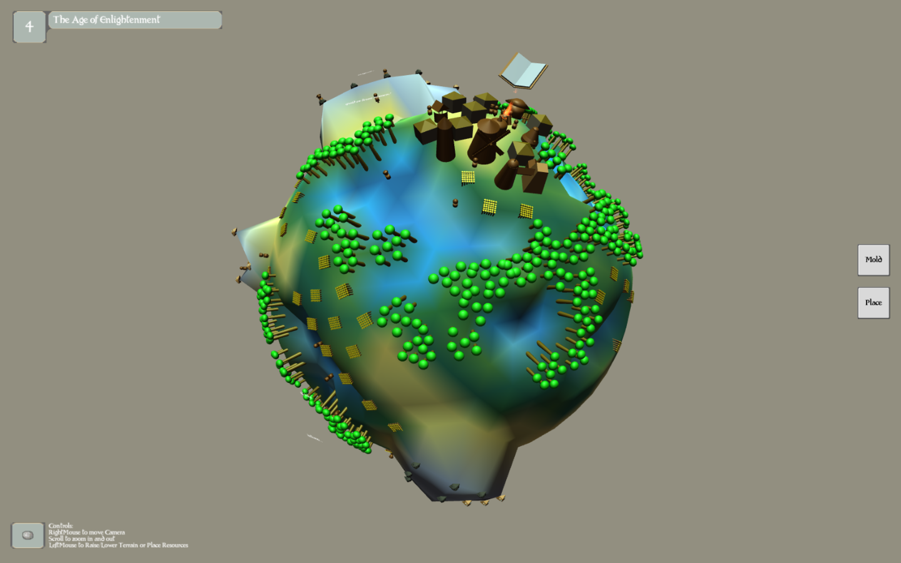

Tales of Maj'Eyal: Minstrel Addon
Personal role: Creator
Available on Steam. Source code is available on Github.
Adds the Minstrel, a lightly armored duelist who uses the power of song to bolster strength and incapacitate foes. Implements 20 new abilities split across 5 ability trees and a new artifact set.
This addon implements the following:
- 20 new abilities across 5 different trees: Musical Combat, Battle Ballads, Wit, Card Invocation, and Performance Arts.
- Musical Combat (DEX): Combat dual-wielding techniques with a focus on global speed manipulation.
- Battle Ballads (WIL): A twist on Chants; gain three sustainable but incompatible ballads, and skills which gain new effects based on your currently active Ballad.
- Wit (CUN): A combo-oriented tree. Abilities exploit a new debuff (Mental Instability) to gain additional effects.
- Card Invocation (CUN): Place your faith in eighteen different cards split into three decks: Benevolence, Malevolence, and Oddities. If you're lucky, you may draw Aces, which trigger incredibly (over)powered effects.
- Performance Arts (CUN): Provides a mix of offensive, defensive, and utility abilities to enhance combat prowess.
- A new artifact set, consisting of 2 artifacts.
- Victario's Trick Lute: High-damage dagger that dazes on crit and boosts mastery of new ability trees.
- Victario's Tasting Chalice: Provides bonus blight and nature damage, and damages attacking enemies.
- Multiple Darkest Dungeon and Jojo references.
This project was built from May-August 2017.
Credits
- All new ability and effect icons were created using www.game-icons.net.
- ToME4's IRC channel for immeasurable amounts of help in debugging.
- Andrew Plumb for lute image (used in Victario's Trick Lute).
- Nicolas "DarkGod" Casalini for creating the game!
Darkest Dungeon: The Constable

Personal role: Creator
Available on Steam.
Introduces the Constable class mod to Darkest Dungeon, which explores the past of the Houndmaster as per his comic released by Red Hook Studios. The Constable shines brightest in a marking party, with numerous mark-exploiting skills that allow him to reach his full potential against proper targets. Additionally, the Constable possesses numerous stealth-canceling abilities and can enter stealth himself, ensuring that no foe can hide from his sight (and not vice versa).
In addition, this mod adds 200 new lines of dialogue related to the Constable.
This project was built and released in December of 2017.
Credits
All art and sound assets are taken from Darkest Dungeon, albeit slightly modified for better thematic sense.
Reddit Short Story to PDF
Personal role: Front-End Developer
Available on Devpost.
Best Overall: Annual MLH Local Hack Day, University of Virginia
Built in 12 hours for Season 18 of the MLH Local Hack Day event hosted by Github. Our team of four individuals successfully built a working 'transcriber' capable of reading posts from the subreddit /r/writingprompts and saving them as PDFs for future reading. In terms of the front end, we were able to build a functional, responsive website using the Material Design template.
I was personally responsible for work on the front end, implementing the site through CSS and HTML manipulation.
Made in December of 2017.
Credits
David Bang, Samarth Kishor, Johnny Wong, William Wong
Dusk Patrol

Personal role: User Interface Programmer
Available on Github.
A top-down shoot-em-up with time travel mechanics, Dusk Patrol was built in the Fall Semester of 2017.
I worked on user interface functionality and responsiveness, including representation of vital stats like health and time resources. Additionally, I created numerous art assets for the game, including the game's logo, the player characters, and all UI sprites.
I also created scripts to allow for basic scorekeeping as well as background responsiveness to player input, which teammates later improved on.
Made from September-December 2017.
Credits
Director: Jack Herd
Programming: Kenny Chen, Erik Haukenes, Jack Herd, Alex Nguyen, William Wong
Design: Brandon Bright, Joshua Santos, Erik Haukenes, Jack Herd
Art: Taylor Nelson, William Wong
Music: Joshua Santos
Ludum Dei

Personal role: Artist and Designer
Available on itch.io.
Ludum Dei is a 72-hour game project made during Ludum Dare 38. The project is essentially a world-simulator, taking inspiration from games such as Reus. As the God of this plane (or should I say sphere!), players sculpt their small world and provide for its denizens.
All art assets in the game were created by me, totaling some 60+ combined 3-D models and 2-D art assets.
Additionally, as a designer, I collaborated with our team to determine evolution mechanics, including thresholds to enter a new era as well as resource types.
Made in May of 2017.
Credits
Programming: Zachary Danz, Jackson Ekis, Jack Herd
Design: David Hall, William Wong
Writing: David Hall
Art: William Wong
Music: Zachary Danz